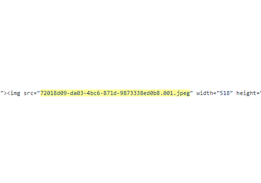
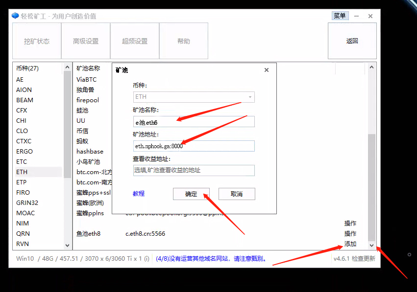
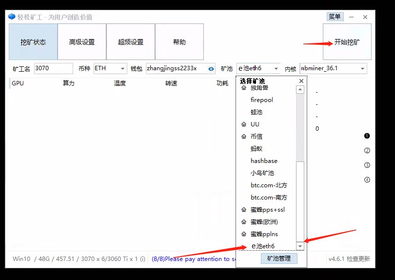
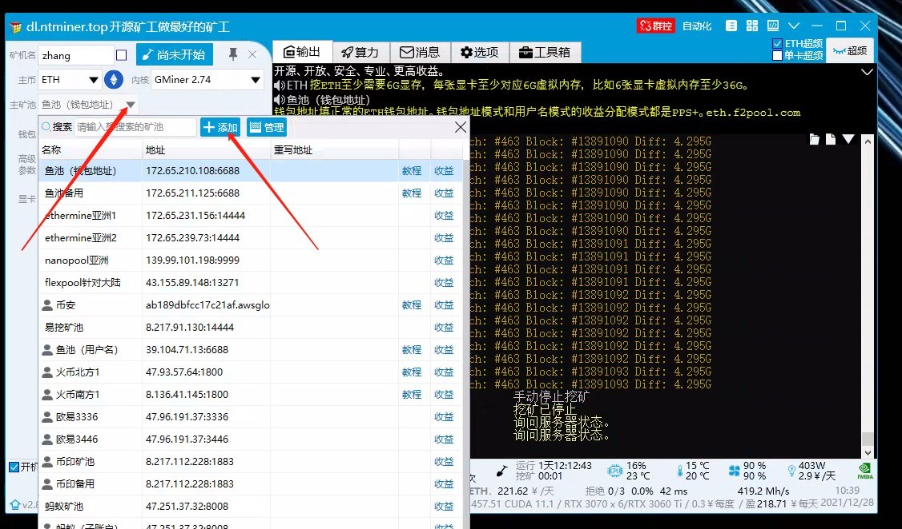
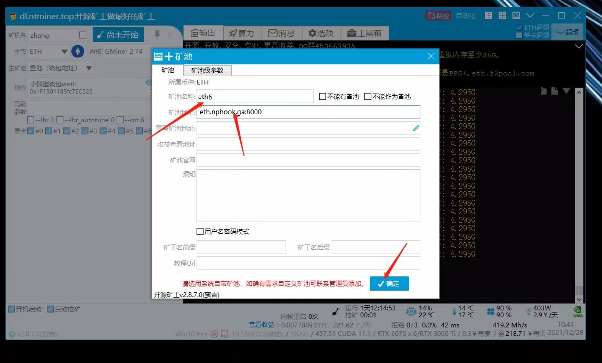
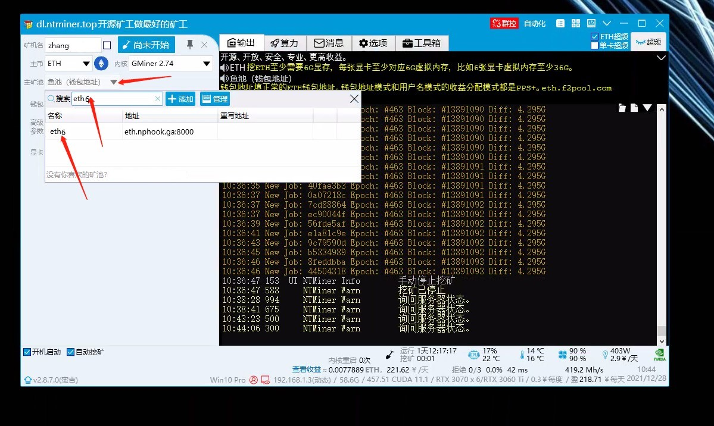

ETH6是我们三位老矿工为了自用而搭建，身边遇到问题的朋友常常有来问地址，索性一起分享出来。
感恩2021年的超级大牛市，让我们已经不用为无法连接到池子而担忧。
（收藏本站并推荐给你的朋友！）
--------------------------------------------
运行两周不掉线，稳如老狗！！低延迟加密地址 ，更稳定
E池 tcp ：eth.nphook.ga:8000
E池 ssl ：eth.nphook.ga:8001
鱼池：eth.nphook.ga:8002
币印池：eth.nphook.ga:8003
风池 tcp ：eth.nphook.ga:8004
风池 ssl ：eth.nphook.ga:8005
ezil tcp ：eth.nphook.ga:8006
ezil ssl ：eth.nphook.ga:8007
欧易池：eth.nphook.ga:8008
币安池 tcp ：eth.nphook.ga:8009
币安池 ssl ：eth.nphook.ga:8010
防失联备用QQ群：511934867
--------------------------------------------
,1，使用教程（轻松矿工） 2，使用教程（开源矿工）
1，首先打开轻松矿工，点击矿池管理

2. 随后我们拉到最底部，点击添加，添加矿池，矿池名字随便填，矿池地址我这里选择的是本网站E池地址 eth.nphook.ga:8000，然后点确认

4.回到轻松矿工首页，选择刚添加的矿池名称，点击挖矿就好了

-------------------------------------------------------------------------
2，使用教程（开源矿工）
1. 打开开源矿工，点击主矿池旁边箭头，点击添加

2. 矿池名字随便填，矿池地址我这里选择的是本网站E池地址eth.nphook.ga:8000，然后点确认

2. 点击主矿池旁小箭头，搜索刚刚添加的名称，找到并点击，然后点击挖矿就好了
